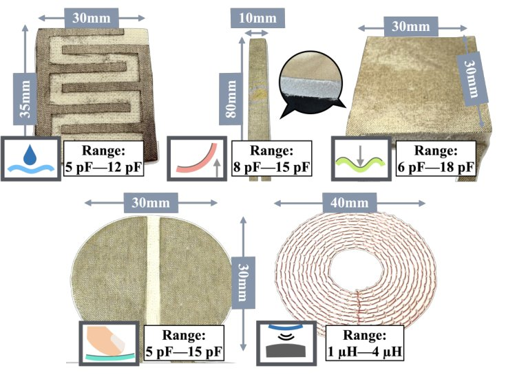
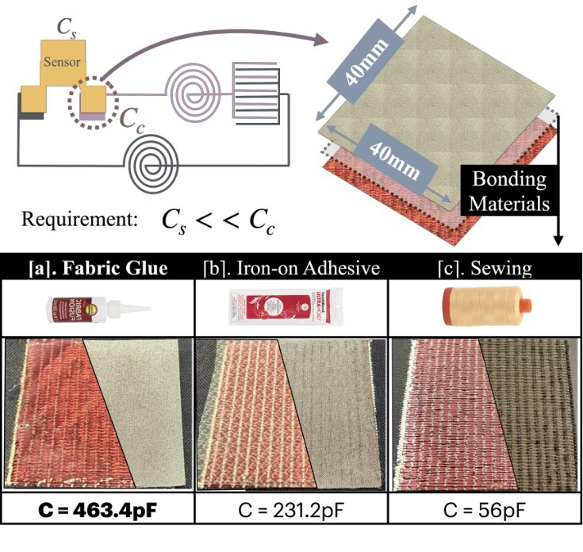
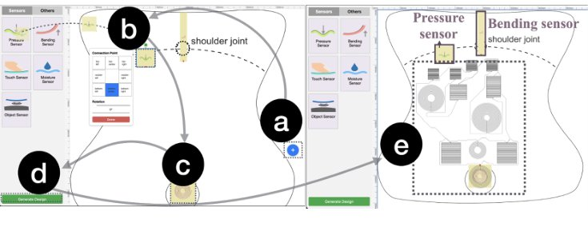
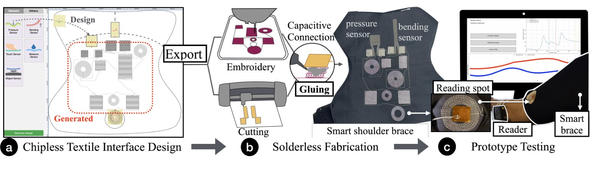
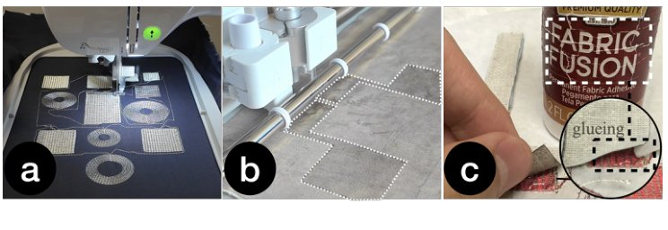
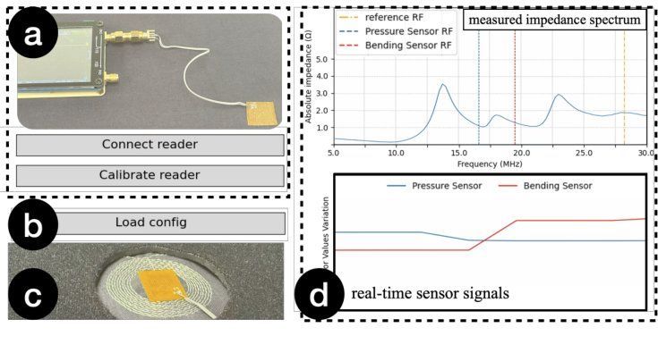

Textro
A Prototyping Toolkit for Solderless and Chipless Smart Textile Interfaces

Research Question
Smart textiles usually need rigid chips, batteries, and soldered joints. Can anyone build a working textile interface using only an embroidery machine, a cutter, and fabric glue?
Textro builds on passive, chipless sensing: textile RLC resonators are read wirelessly through a coil, so the garment needs no batteries or circuit boards. The toolkit covers the whole workflow, from design and fabrication to testing, so makers and designers can prototype without RF or soldering expertise.
At a glance
Core Contributions

Predictable textile components
Through empirical study, we optimized embroidered capacitor and inductor designs so they come out with consistent, predictable electrical values, which reliable high-frequency resonance depends on.

Solderless fabrication
Parallel RLC circuits are embroidered as one-stroke continuous paths. Sensors attach with fabric glue and connect through high-frequency capacitive coupling instead of solder.

Automated design environment
A web tool where users import sewing patterns and place sensors. It generates the component and circuit designs and the machine-ready fabrication files automatically.
Workflow
(a) Design on a garment pattern. (b) Embroider, cut, and glue. (c) Test with a wireless reader that scans the impedance spectrum and shows real-time sensor signals.



Cite